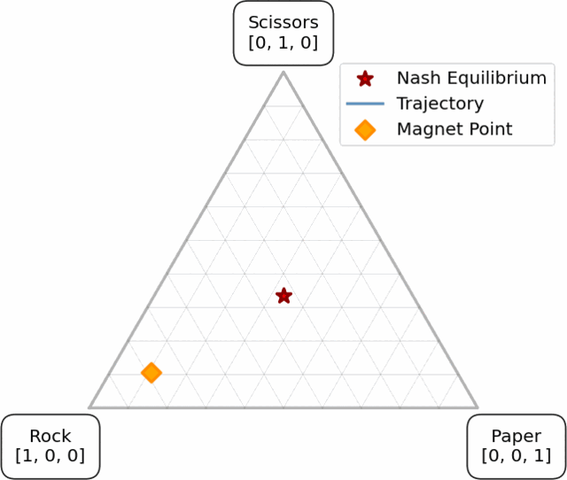
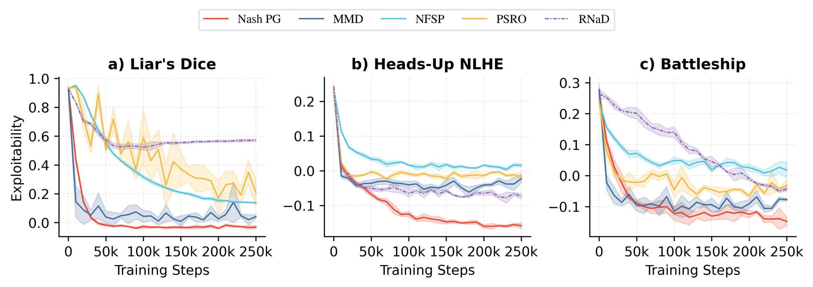
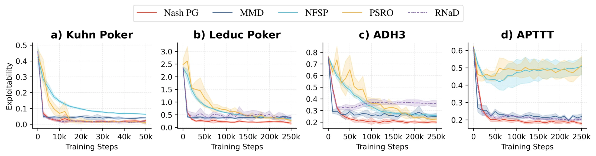

NashPG
A Policy Gradient Method with Iteratively Refined Regularization for Finding Nash Equilibria
Transactions on Machine Learning Research (TMLR), 2026

What is NashPG?
NashPG is a simple way to train one policy per player toward a Nash equilibrium. It is essentially Independent PPO with one addition: a KL regularization term toward a reference policy—a magnet—that is periodically updated.
Each player still trains independently. There is no growing population of agents and no separate policy-extraction stage.
Why did we build it?
The most commonly used prior approaches are population based. They require training many agents, and their convergence guarantee applies to the average of the population rather than to a single policy. This increases the training cost and requires additional machinery to extract or deploy the average policy.
Single-policy algorithms do exist, but they often use specialized optimization schemes, and their empirical performance has been mixed across papers. I wanted a simple single-policy algorithm that just works and stays close to the tools we already use in single-agent reinforcement learning.
The idea
NashPG makes a small change to Independent PPO:
- Each player independently updates its policy with PPO.
- A KL penalty pulls the policy toward its current magnet.
- After several updates, the magnet moves to the new policy.
Then we repeat. In our JAX implementation, this differs from Independent PPO by about 20 lines of code.
Does the moving magnet converge?
At the exact mixed-strategy level, we study this procedure as Iterative MMD (IMMD). The informal result is:
Unless the policy is already at a Nash equilibrium, every exact refinement step strictly reduces its Bregman divergence to a Nash equilibrium. Repeating the refinement converges to a Nash equilibrium.
Bψ(z★; zt+1) < Bψ(z★; zt)
The theorem is for IMMD in two-player zero-sum extensive-form games under the assumptions in the paper. NashPG is the practical policy-gradient approximation inspired by this result.
How does it perform?
Surprisingly, pretty well. We test NashPG on seven imperfect-information games, ranging from Kuhn Poker with 12 information states to Battleship with at least 2.9 × 1035. NashPG remains stable, reaches low exploitability on the exact benchmarks, and scales to games where exact evaluation is no longer tractable.

Head-to-head results
NashPG achieves positive average payoff against PSRO and R-NaD across all three large games. These are meaningful baselines: population-based training were central to AlphaStar, while R-NaD is the learning method behind DeepNash. We are particularly proud that such a small algorithmic change performs this well.
| Game | vs PSRO | vs R-NaD |
|---|---|---|
| Liar’s Dice | +.153 ± .046 | +.163 ± .041 |
| Heads-Up NLHE | +.149 ± .015 | +.104 ± .064 |
| Battleship | +.092 ± .008 | +.107 ± .008 |
Exact-exploitability results on the smaller games

Citation
@article{yu2026nashpg,
title = {NashPG: A Policy Gradient Method with Iteratively Refined
Regularization for Finding Nash Equilibria},
author = {Yu, Eason and Liu, Tzu Hao and Canonne, Cl\'ement L. and
Wang, Yunke and Xu, Chang and Tran, Nguyen H. and
Albrecht, Stefano V.},
journal = {Transactions on Machine Learning Research},
year = {2026},
url = {https://openreview.net/forum?id=yIA2Fjs1FK}
}